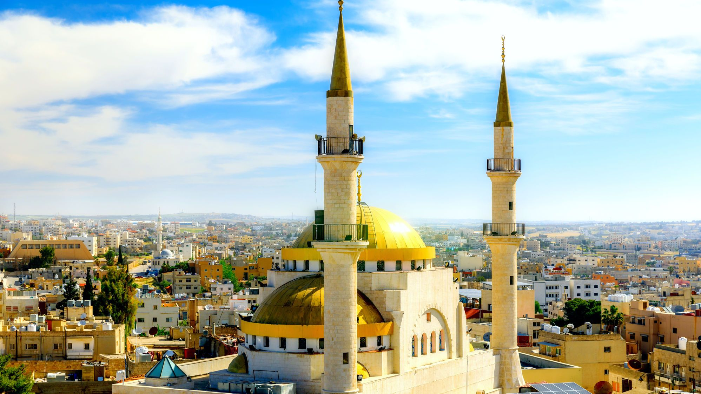
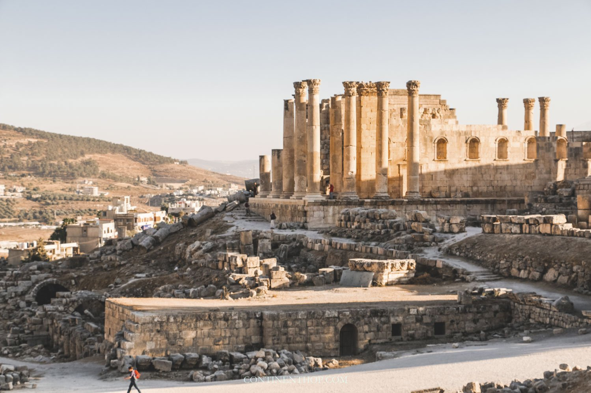
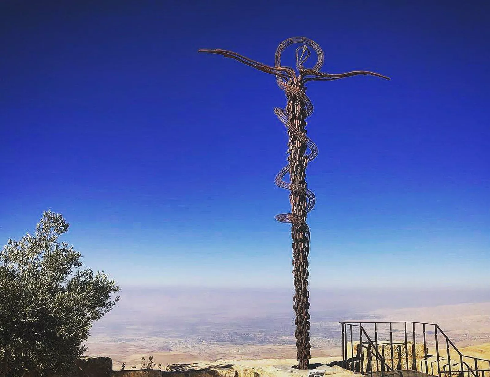
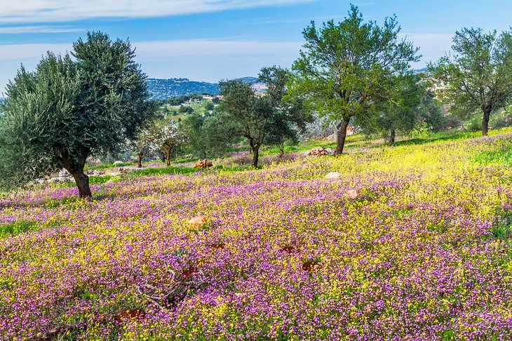
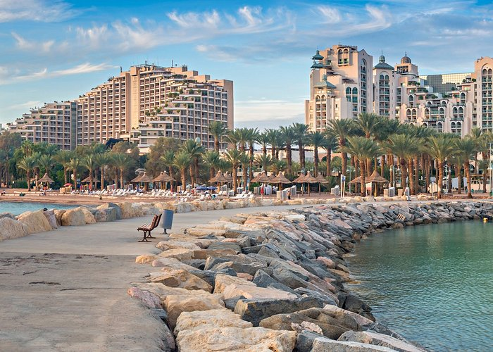
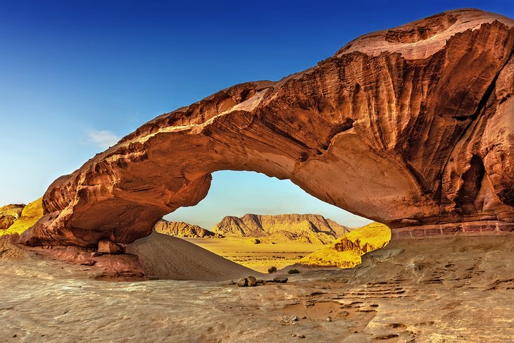
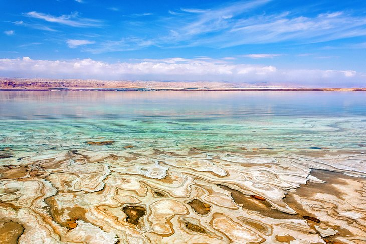

Within this page, you will learn about numerous sites that hold some archaeological significance
such as the Roman ruins in Jerash or the mosaics of Madaba. There will also be a number of recommended
sites that one should visit if they were ever to travel to this extravagant region. Nevertheless,
each site that you see will either be a relaxing spot to spend the day at, an area to observe for
some history on their archaeological background, or a combination of both.
Petra
Petra, the famed pink city, would be the first spot that any visitor should go to when exploring Jordan.
This architectural structure was built around a little under two thousand years ago by the Nabateans. This
city was also recently claimed as one of the new seven wonders around the world due to its wonderful sites
and striking colors that light up throughout the day. When coming to Jordan, expect to leave at least a day
for Petra due to how much this city has to offer. These include the Siq, the Streets of Facades, The Monastery,
Aaron’s Tomb, and the most popular site, the Treasury of Petra with it’s rose colors and architectural carvings
that cover it. Thus, these sites are only the tip of the iceberg, as there are many other things to see within
this lovely city.
Madaba

The city of Madaba contains the largest number of mosaics that were discovered in their original location in
the world. Although this city isn’t your ordinary site seeing location, this trading location houses a lot of
history through it’s mosaics that can be found one church floors and in buildings all around the city. The most
significant mosaic within Madaba can be found in St. George’s Church and is named, the Madaba Mosaic Map. This
map dates back to the 6th century while and gives us an idea of what the Holy Land looked like during the Byzantine
Period. Such a piece contains over two million pieces of colored in stone that depicts how the Nile Delta and
Jerusalem looked back them. Moreover, with the number of mosaics held within Madaba, the city could be considered
a site itself and many more of these mosaics can be found in other locations in Madaba such as the Archaeological
Park I that houses a beautiful mosaic from the Church of the Virgin Mary and the Archaeological Museum that holds
the earliest known mosaic of Madaba, the Mosaic of the Lower Baptistry Chapel.
Jerash

The Roman ruins of Jerash are one of the world’s best preserved ancient Roman cities. Long ago, this site housed
thousands of Roman individuals with it’s temples, theatres, and even chariot races that were participated in at
the Hippodrome. The hippodrome would contain up to 15,000 spectators and could be found south of the ruins behind
the Triumphal Arch. This arch, built in 129 C.E., was made to honor the Emperor Hadrian when they visited the
Roman site. Within this location were also two gates, the North Gate, and the South Gate. The South Gate was one
of four that surrounded the city and one could enter to see an extravagant view of the Temple of Zeus. Entering
through the North Gate would allow one to see the Temple of Artemis that hung over the city. In addition, near
each gate were both a North and South theatre that visitors will be able to see. Those will also notice paved
streets with stones due to chariots that rode through the city. With so much to see, Jerash should be a site to
see on anyone’s visit.
Mount Nebo

This mountain is said to be the one of the most popular biblical sites in Jordan. It contains some of the best
preserved mosaics, a tall cross like figure with a snake around it called the Serpentine Cross, and the Moses
Memorial Church. This church is probably named this way since the Old Testament states that Mount Nebo is where
Moses saw the “Promised Land” before he was destined to die. Mount Nebo holds a perfect spot for sightseeing
across the open mountain or even having a nice picnic with loved ones and with the view that it provides for
visitors, one is bound to have such a memorable experience here.
Ajloun

After seeing how most of Jordan is primarily desert, it would seem surreal to see a field of blooming flowers
and raising treetops in a large area, but, that’s what Ajloun is. The change in scenery will make you feel like
you’ve been transported into a whole new world with the amount of flowers and greenery present here. The land
spreads for about 13-square-kilometers and presents the perfect opportunity to capture an amazing picture. While
here, one can spend their day roaming the area, hiking around the Ajloun Forest, or even having a picnic. Don’t
forget about the wildlife though, because if you keep an eye out, animals such as the striped hyena or the crested
porcupine can be spotted nearby. Once you Ajloun’s mountain-top area, one will be gifted a wide view of the Jordan
Valley, making the experience well worth it.
Aqaba

If you need a place to call home while in Jordan, then Aqaba is the place. Stay at one of their hotels and then
enjoy the wonderful cruises that they have to offer, or even take a moment to spend some time at the Red Sea’s
coastline. Enjoy the rich water and go for a swim with loved ones. There are even hammams, luxurious Turkish steamed
baths, that will make for a relaxing soaking experience. Lastly, Aqaba has a favored dish called the sayadieh that
contains flavored rice, tomatoes, onions, and chili peppers that will leave a memorable taste in your mouth. So, if
you need a vacation spot for the week that provides a never-ending experience, then head to Aqaba.
Wadi Rum

Wadi Rum, also known as the Valley of the Moon, can be found in the southern region of Jordan. This site, made
up of huge cliffs, caverns, and other bizarre landscapes, has been made into a tourist attraction by a group
called the Zalabia Bedouin. They utilize the sandy area to provide visitors with camel/horse rides, ATV tours,
rock climbing, and even hiking through some of the canyons there. The site may be a rather hot one, but the night
time makes up for it by allowing the opportunity to stargaze into the dazzling deep blue sky. With so much to do,
there’s no way anyone could pass up a trip here.
Dead Sea

Looking for a relaxing spot with an amazing view? Then the Dead Sea is the place to go. Such a beauty encapsulates
an aesthetic look with the range of colors it produces. This is due to the salted rock ledges and barren red
mountains that surround the body of water. Nearby are even some plush spa resorts and private wading areas that
contain Dead Sea mud. A bath of this will cleanse your body entirely, resulting in peak skin condition. Nonetheless,
if you need a nice view, soothing water, and a new skin care routine, then the Dead Sea is just the place.